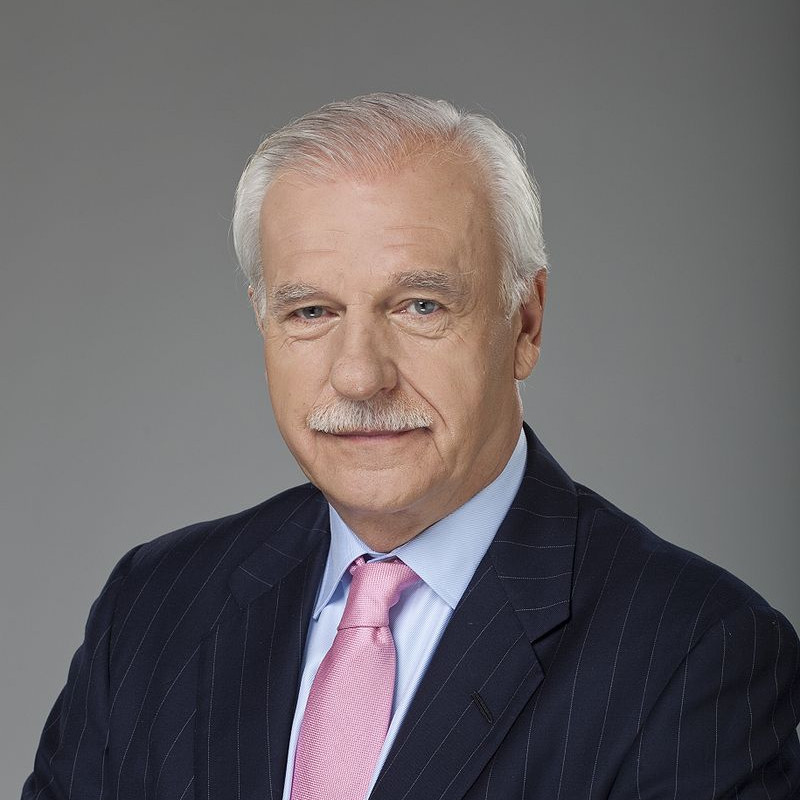

Winner

2. Andrzej Marian Olechowski
3. Marian Krzaklewski
Turnout
36%
Results table
| Candidate | Votes | Percentage |
|---|---|---|
| Aleksander Kwaśniewski | 822 | 49% |
| Andrzej Marian Olechowski | 317 | 19% |
| Marian Krzaklewski | 290 | 17% |
| Andrzej Lepper | 78 | 5% |
| Lech Wałęsa | 67 | 4% |
| Jarosław Kalinowski | 65 | 4% |
| Janusz Korwin-Mikke | 23 | 1% |
| Dariusz Maciej Grabowski | 6 | 0% |
| Jan Łopuszański | 5 | 0% |
| Piotr Ikonowicz | 3 | 0% |
| Tadeusz Adam Wilecki | 2 | 0% |
| Bogdan Pawłowski | 1 | 0% |